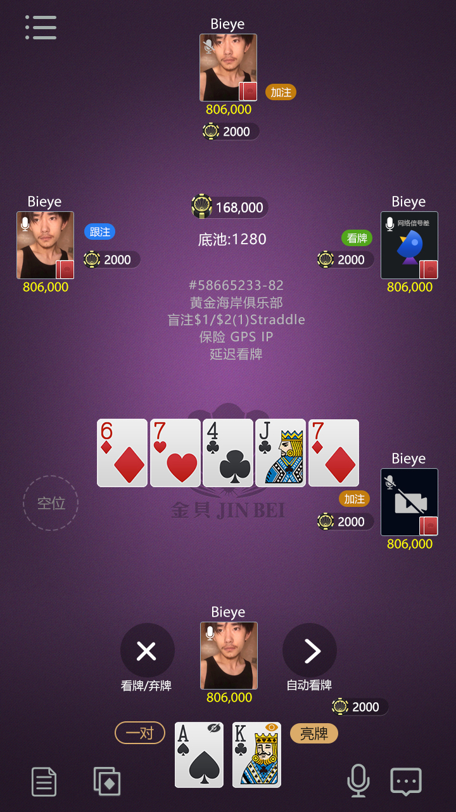
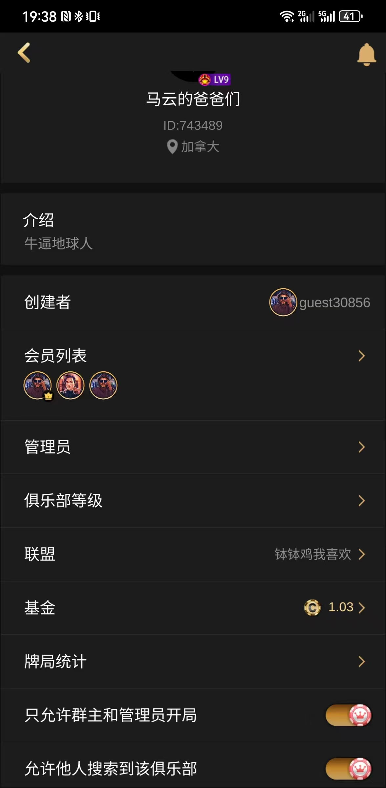
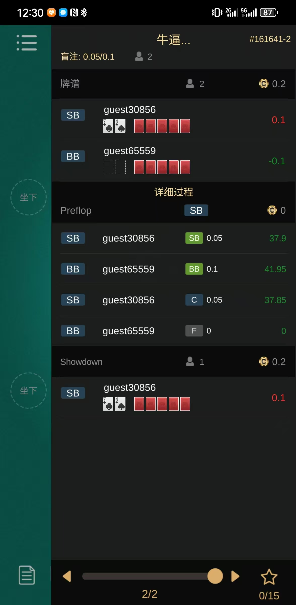
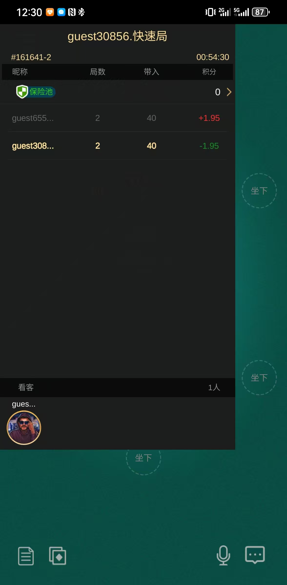
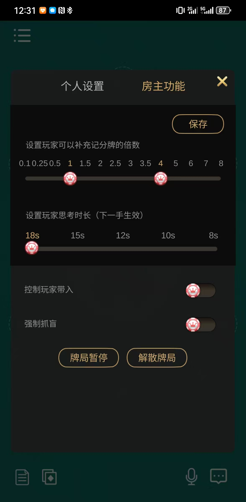
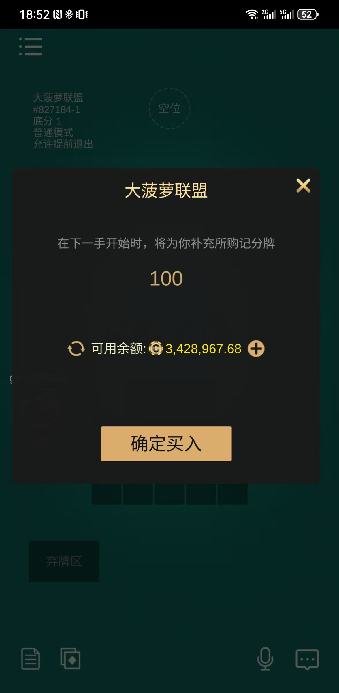
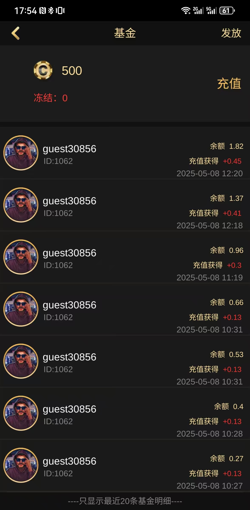
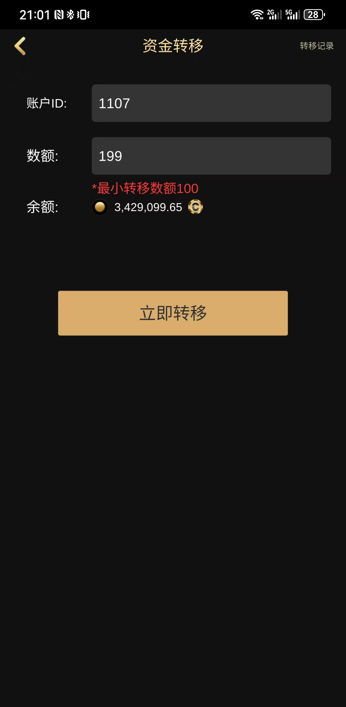
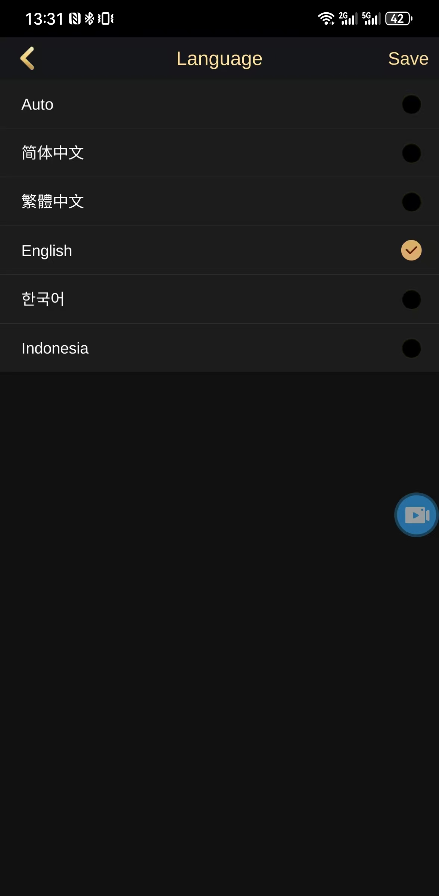

私人房 / 好友局
房間類型、房主管理、買入倍數與結算資料。
以真實程式與產品介面展示私人局、快速場、AOF、短牌、SNG、MTT、保險、牌譜、俱樂部基金及 C++ / Tars 房間服務。
這是線上多人德州撲克房間與桌台服務的核心程式。房間、玩家、桌台、訊息與訂單介面，呈現配對、入桌、下注、旁觀、離線重連到結果記錄的服務端流程。完整上線仍需外部設定、資料庫、閘道、客戶端與安全合規能力。
以下能力均可在倉庫程式或產品畫面中找到對應證據。
房間類型、房主管理、買入倍數與結算資料。
不同玩法使用專用桌台管理流程。
涵蓋報名、排名、淘汰與獎池相關狀態。
入座、下注、買入、延時、自動操作、保險與多次發牌。
行動回放、收藏、房間結果與積分記錄。
房間資訊、基金發放、流水與管理介面。
房間、玩家、桌台、訂單和外部代理介面。
畫面顯示簡中、繁中、英文、韓文與印尼文入口。
桌台、俱樂部、牌譜與房主管理皆使用原產品畫面。





以下皆為真實產品畫面，並與倉庫中的房間、玩家、桌台和俱樂部流程對應。每張圖片旁都說明具體功能，而不是只陳列畫面。

買入流程
玩家進入有效牌局前，可在買入介面選擇房間規則允許的金額。服務端同步餘額、座位與遊戲狀態；私人房亦可透過房主設定控制買入倍數。

俱樂部營運
俱樂部畫面展示基金發放、餘額變化和歷史流水，並與程式中的俱樂部房間資料相互對應。營運人員可查看具體記錄，而非只有籠統入口。

營運流程
轉帳頁面呈現私人房與俱樂部房之外的營運流程。正式上線時，這些操作仍須接入身分驗證、資料庫記錄、風險控制，並遵守所在地支付與遊戲營運規範。

多語言體驗
畫面中的語言入口包含簡體中文、繁體中文、English、한국어 與 Bahasa Indonesia。本站為簡體、繁體和英文建立獨立頁面，讓使用者及搜尋引擎進入相符內容。
倉庫中可見私人房、快速場、AOF、短牌、SNG 與 MTT 處理路徑。
包含下注、買入、延時、自動操作、保險與多次發牌相關處理。
俱樂部資料及行動訂單介面有程式依據，並明確說明部署依賴。
從進入大廳到牌局結果的主要流程。
由大廳進入公開配對、俱樂部或私人桌。
服務記錄配對、入座、旁觀、離線與重連。
玩家下注，並可使用延時、自動操作與保險。
產生牌譜、結果；賽事繼續排名、淘汰與獎池流程。
RoomServant、Room、PlayerMng 與不同 TableManager 構成核心房間服務。
此倉庫主要展示核心服務與協定程式，並非單獨複製即可上線的完整成品。正式環境仍需 Tars、設定中心、資料庫/快取、閘道、客戶端、支付憑證、監控、安全與合規配置。
如需了解程式範圍、技術評估或合規二次開發，可透過以下方式聯絡。